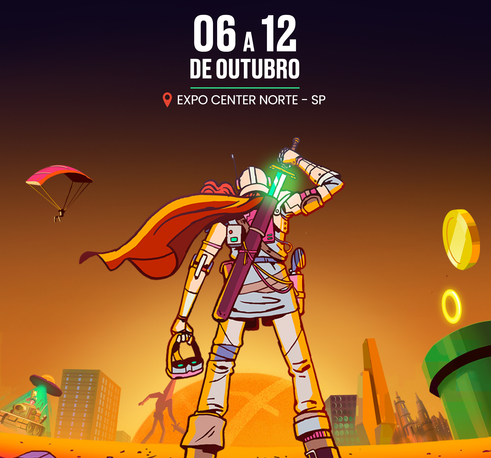

DE VOLTA AO JOGO!
Mais de 1,8 milhão de pessoas já passaram pela Game Over e os visitantes desse ano farão parte da maior edição da história, que contará com cerca de 400 estandes, mais de 3.000 influenciadores, campeonatos de eSports, áreas temáticas, centenas de lançamentos, atrações e muito mais. A Game Over tem um DNA essencialmente gamer e é uma feira diferente de tudo oque existe no segmento. A cada edição apresenta mais atrações para o público se divertir com milhares de estações, sejam máquinas arcade, plataformas mobile, PCs, óculos de realidade virtual, consoles, board games, card games ou qualquer outra forma jogar.
Realizada pela primeira vez em 2009, inicialmente como Rio Game Show, na capital flum inense, a Game Over ocupa atualmente todos os pavilhões do ExpoCenter Norte, em São Paulo. Além disso, reúne as principais empresas do segmento, é palco de grandes lançamentos, abre espaço para estúdios independentes e atrai personalidades do mercado de games.
A Game Over é também uma excelente oportunidade de negócios que atrai investidores, empresários e profissionais do mercado de games e tem uma forte preocupação social, tendo arrecadado e doado mais de 400 toneladas de alimentos ao longo de suas 13 edições.
